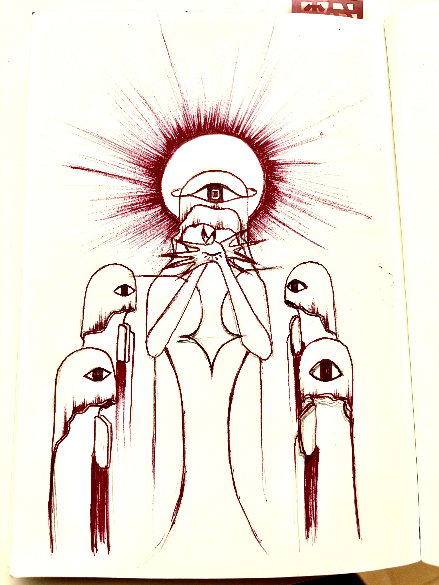
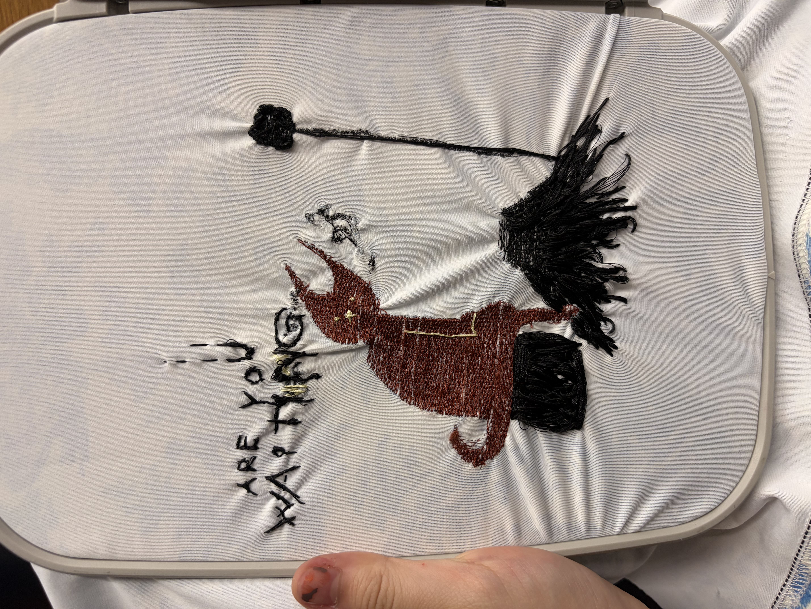
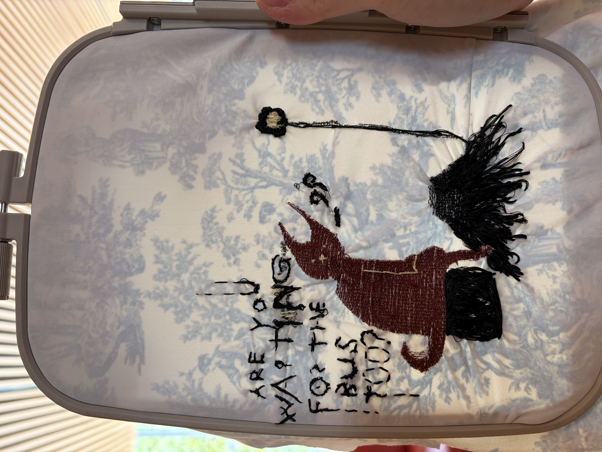

One of the most important parts of my project is the 'painting' that would be on stretchy fabric. Of course my first step was to make sure I had an idea of the motor for the hand movement, but once I got that done, most of the actual assembly actually relied on the size of the embroidery and the 'canvas'. I then started with a design that was--after learning how to use the embroidery for 2 weeks--in the end too complicated, I switched my deisgn for a more simplier look, easier for the machine to handle.
Here is the intial design where the lines are too fine

This is the deisgn I later made, and embroidered with machine and by hand.


Along with the embroidery machine, I also made quite the effort to 3D scan and sometimes freehand Blender to make my 'Ghost' for the painting. I got my roommate, Laura, to volunteer before messing up her face to make it look scary. Below is something that I freehanded myself.